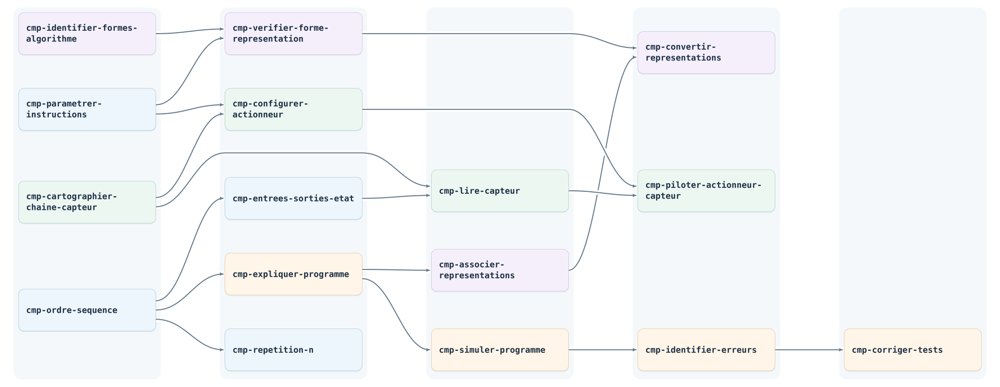

ORIGAMIA · 2 octobre 2026 · 16 compétences, 48 attendus, 17 relations directes
Ce modèle propose une entrée progressive dans les compétences, à partir des attendus et des formats d’exercices du référentiel. Les arcs expriment un choix pédagogique argumenté. Ils ne certifient pas qu’un autre ordre serait impossible avec un accompagnement adapté.
Ouvrir le SVG vectoriel · PNG pour Google Sheets · Modèle et données source · Relations en CSV

| Couche | Code | Compétence du référentiel | Prérequis directs |
|---|---|---|---|
| 1 | C1 | Organiser et justifier l’ordre d’exécution d’un algorithme simple (séquentialité).cmp-ordre-sequence | Aucun dans le référentiel |
| 1 | C4 | Paramétrer correctement des instructions (fonctions intégrées et paramètres)cmp-parametrer-instructions | Aucun dans le référentiel |
| 1 | R4 | Identifier les formes d'écriture d'un algorithmecmp-identifier-formes-algorithme | Aucun dans le référentiel |
| 1 | T1 | Cartographier la chaine “capteur → commande → actionneur” d’un objet programmablecmp-cartographier-chaine-capteur | Aucun dans le référentiel |
| 2 | A1 | Comprendre et décrire le comportement prévu d’un objet programmablecmp-expliquer-programme | C1 |
| 2 | C2 | Identifier et expliciter les entrées, les sorties et l’état intermédiaire d’un algorithme.cmp-entrees-sorties-etat | C1 |
| 2 | C3 | Mettre en œuvre une répétition simple (répéter N fois) pour automatiser une actioncmp-repetition-n | C1 |
| 2 | R2 | Vérifier la forme d’une représentation d’algorithme simplecmp-verifier-forme-representation | R4, C4 |
| 2 | T4 | Commander un actionneur pour produire un effetcmp-configurer-actionneur | T1, C4 |
| 3 | A2 | Prévoir l’état produit par l’exécution d’un programmecmp-simuler-programme | A1 |
| 3 | R1 | Associer des représentations équivalentes d’une même instruction ou séquencecmp-associer-representations | A1 |
| 3 | T2 | Lire une information de capteur et la rendre exploitable dans le programmecmp-lire-capteur | T1, C2 |
| 4 | A3 | Critiquer un programme au regard du comportement de l’objet programmécmp-identifier-erreurs | A2 |
| 4 | R3 | Convertir des représentations d’un même algorithmecmp-convertir-representations | R2, R1 |
| 4 | T3 | Relier directement un capteur à un actionneurcmp-piloter-actionneur-capteur | T2, T4 |
| 5 | A4 | Modifier un programme pour obtenir le comportement attendu d’un objetcmp-corriger-tests | A3 |
Les numéros renvoient aux exercices présents dans referentiel.sqlite. Ils illustrent la tâche qui motive la relation ; ils ne constituent pas une validation expérimentale du prérequis.
| Relation | Raison retenue | Exercices |
|---|---|---|
| R4 → R2 | Reconnaître les conventions d’une écriture pour juger si l’extrait respecte cette forme. | 85–90, 201–204 |
| C4 → R2 | Repérer le rôle d’un paramètre pour détecter une instruction incomplète ou insuffisamment précise. | 19–27 ; 82–90 |
| C1 → A1 | Comprendre que l’ordre des instructions détermine l’ordre des actions décrites. | 1–9 ; 46–54 |
| C1 → C2 | Suivre l’ordre d’une transformation simple pour relier les données de départ à ce qui est produit. | 28–30, 163–164 |
| C1 → C3 | Identifier une séquence avant de délimiter le motif répété et les actions à placer hors de la boucle. | 10–18, 151–156 |
| T1 → T4 | Distinguer l’actionneur et son effet physique avant de choisir sa commande. | 136–138 ; 118–120 |
| T1 → T2 | Distinguer acquisition et action pour reconnaître quel élément fournit la donnée recherchée. | 136–138 ; 109–117 |
| C4 → T4 | Comprendre ce que règle un paramètre avant d’ajuster angle, puissance, volume, durée ou sens. | 121–126, 225–228 |
| A1 → R1 | Interpréter les actions décrites avant de décider que deux écritures expriment la même instruction ou séquence. | 46–48 ; 73–81 |
| A1 → A2 | Lire et comprendre les instructions avant de dérouler leurs effets depuis un état initial. | 55–63, 181–186 |
| C2 → T2 | Distinguer une donnée réellement acquise d’un nombre ou d’un texte fixe affiché en sortie. | 109–111, 217–218 |
| R2 → R3 | Reconnaître une représentation complète et cohérente pour choisir ou compléter la forme cible. | 85–90 ; 94–99 |
| R1 → R3 | Reconnaître l’équivalence sémantique pour conserver les actions, les paramètres et l’ordre lors d’une conversion. | 73–81 ; 91–99 |
| A2 → A3 | Prévoir les effets d’un programme pour les confronter à la mission et localiser ce qui empêche sa réussite. | 37–45, 169–174 |
| A3 → A4 | Identifier le défaut à corriger et son effet pour choisir une modification utile, puis vérifier la réussite. | 64–72, 187–192 |
| T2 → T3 | Identifier la donnée fournie par le capteur avant de la transmettre directement à un réglage. | 127–135, 229–234 |
| T4 → T3 | Comprendre l’effet du réglage de l’actionneur avant de remplacer sa valeur fixe par une mesure. | 127–135, 229–234 |
L’ordre peut s’enseigner avec des actions usuelles ; les paramètres avec une valeur à reporter ; les formes avec leurs indices visibles ; la chaîne technique avec un schéma fourni et un élément manquant. Aucune de ces introductions ne demande de réaliser les tâches des trois autres compétences.
Les attendus CM1 et CM2 d’association et de conversion peuvent porter sur une instruction ou une séquence sans boucle. Ajouter C3 comme prérequis général bloquerait inutilement leur entrée. Pour les attendus att-associer-representations-6e et att-convertir-representations-6e, ajouter le socle C3 avant les tâches avec répétition : cette condition est locale à ces variantes.
Ces deux compétences construisent des regards complémentaires à partir de la séquentialité : transformation de données pour C2, rôle des actions pour A1. Leur contenu se recouvre en partie ; les mettre dans une chaîne stricte artificielle ferait attendre un apprentissage qui peut commencer en parallèle.
Les simulations de positions, de batterie ou de durée demandent de comprendre l’état initial et les effets des instructions, mais pas de maîtriser la désignation formelle des entrées et sorties. C2 renforce A2 ; A1 constitue ici son prérequis opératoire retenu. Pour lire un capteur, la distinction donnée réelle / valeur fixe devient en revanche centrale, ce qui justifie C2 → T2.
Il est possible de comprendre les actions d’un extrait présenté avec une légende sans savoir classer toutes ses formes d’écriture. R4 est donc reliée à la vérification formelle R2, où connaître la convention attendue est utile, sans devenir un passage obligé de tous les programmes.
Au CM1, T1 demande de choisir l’élément ou l’effet manquant dans un schéma guidé. Ce premier repérage des rôles peut précéder les activités de sélection d’une donnée mesurée et de réglage d’un actionneur. Les tâches avancées de cartographie consolident ensuite ces rôles ; elles ne doivent pas être imposées avant l’entrée dans T2 ou T4.
Les exercices T4 fournissent la commande et demandent d’en régler les valeurs ; ils n’exigent pas le diagnostic d’une séquence ni le classement de corrections selon leurs effets sur plusieurs tests. Le verbe « corriger » ne suffit donc pas à créer A4 → T4. Le socle C4 et le rôle de l’actionneur T1 sont les antécédents retenus.
Pour choisir une correction de façon autonome, il faut relier l’erreur au résultat attendu. Le travail CM2 sur deux tests demande en plus de conserver le test déjà réussi. A2 est déjà un ancêtre via A3 : l’arc A2 → A4 serait redondant.
Le référentiel limite explicitement les relations capteur–actionneur à une transmission directe, sans condition ni calcul de conversion. Les deux prérequis retenus sont donc la lecture d’une donnée et la compréhension du réglage de l’actionneur.
Les compétences sont larges : leurs attendus CM1, CM2 et 6e forment une progression en spirale et ne constituent pas des blocs indivisibles. Les tâches de cartographie CM2 et 6e se recouvrent notamment sur les chaînes à cinq éléments. Pour un moteur adaptatif imposant des blocages, décliner les arcs au niveau des 48 attendus et vérifier le modèle sur les réussites observées avant de l’utiliser comme règle obligatoire.
Les 16 identifiants sont couverts une fois chacun. Le graphe est acyclique et chaque arc respecte l’ordre des couches. Aucun arc n’est transitivement redondant. L’ordre des cartes a été optimisé par énumération des permutations dans chaque couche, avec points de passage pour les arcs longs : deux croisements subsistent, minimum dans ce modèle de dessin par couches. Une coupure blanche aux intersections évite de les confondre avec une jonction.
Les couches ne sont pas des classes scolaires. Une branche peut avancer dès que ses propres prérequis sont disponibles. La répétition devient un prérequis supplémentaire pour les variantes avancées de R1 et R3 qui comportent des boucles.